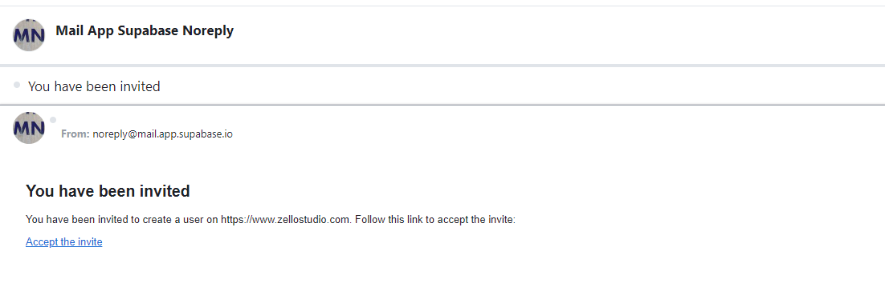
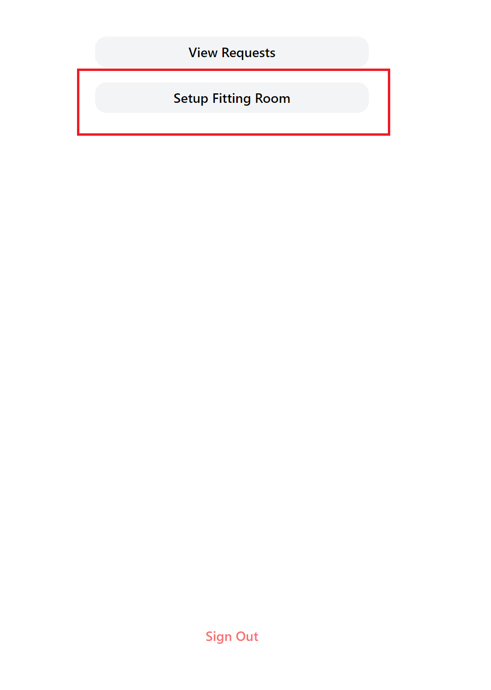
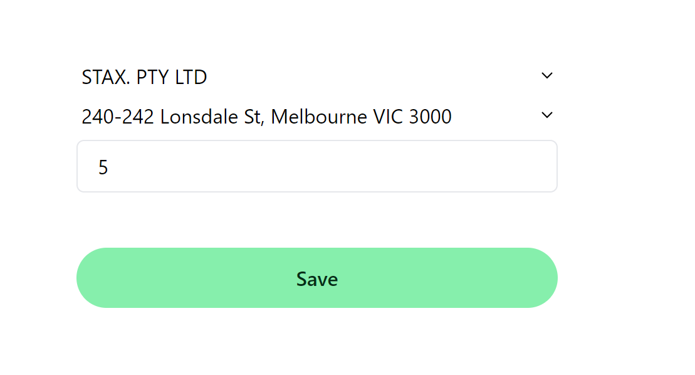
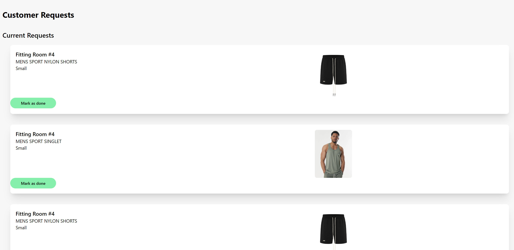

Welcome to Zello Studio’s manual
You are reading this page likely because your company has bought into Zello studio’s software.
Before you begin, make sure you have received an invitation email. If you have not received it, please speak to your manager.

To start, login via https://www.zellostudio.com/staff/login
Setup Fitting Room
To setup the fitting room, click on Setup Fitting Room

Now choose your copmany and the location. Indicate which fitting room this device is located at.

Remember to sign out when you are done!
Customer Requests
Now click on View Requests. These are requests requested by the customers in the fitting room. Please enable notifications so that you can get timely
notifications when a customer requests.

When a request is done, mark them as done.